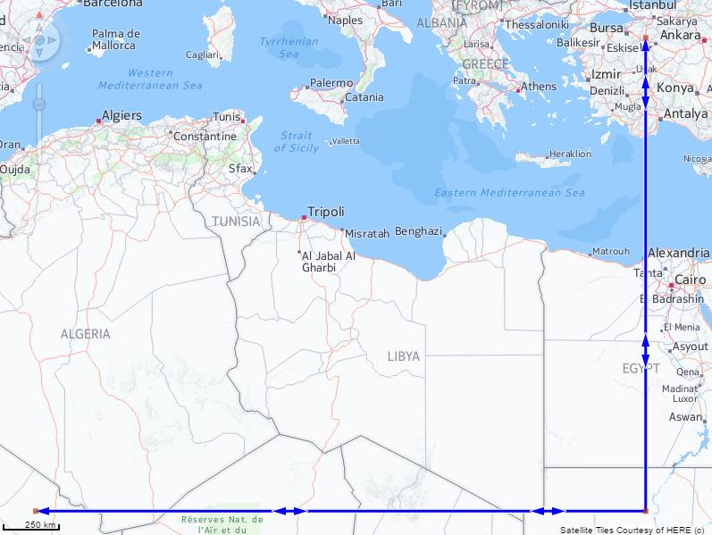
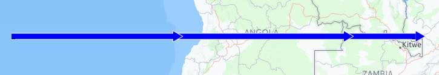
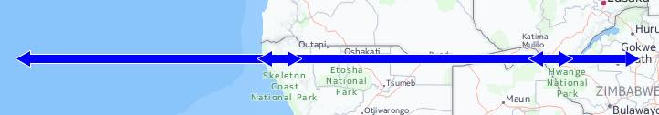
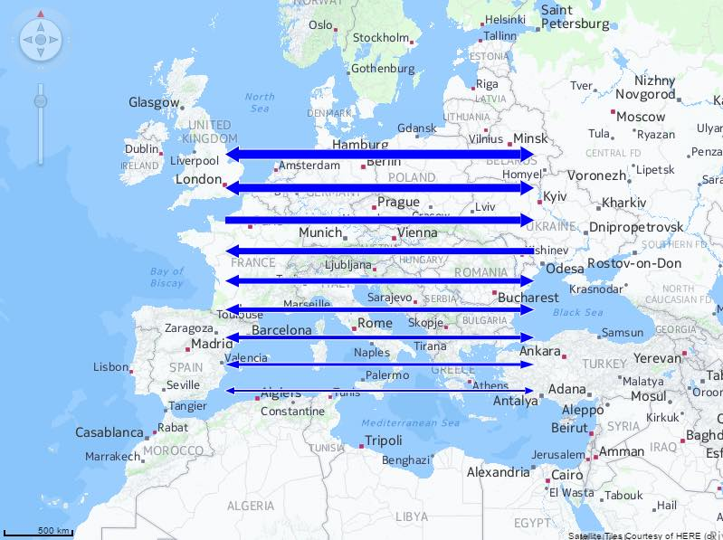

The aim:
- To check that there are routes and arrows with triangles.
- To check that routes can have varying widths.
To test:
- Check that there are Routes on the GeoMap.
- Zoom in and out of the map, and check that some routes have triangles on their path indicating the direction of the route. 
- Check that arrows pointing in one direction have triangles pointing in that same direction. 
- Check that bi-directional arrows have triangles pointing in both directions. 
- Click the "Other sample" button. Check that you can see Routes with different widths for single directional arrows.
- Click the "Other sample" button. Check that you can see Routes with different widths for bi-directional arrows. 

If start/end arrows are defined and they are outside the visible area, the route shows triangles in between indicating the direction.